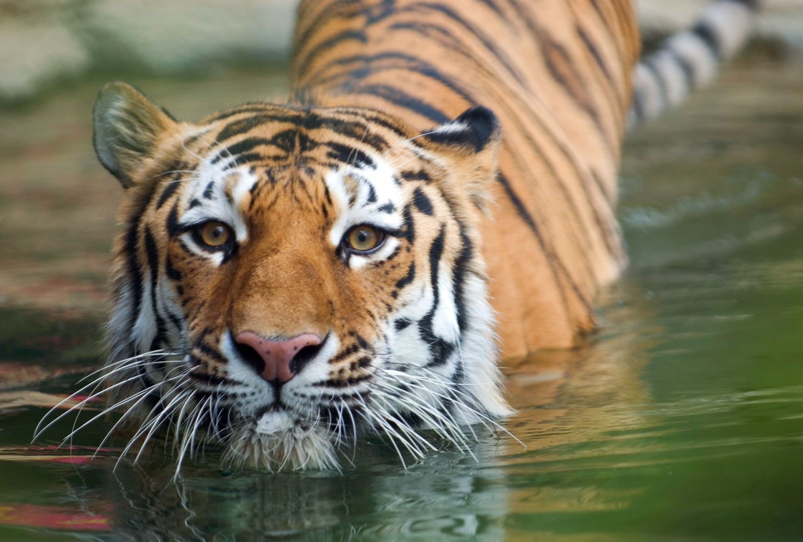
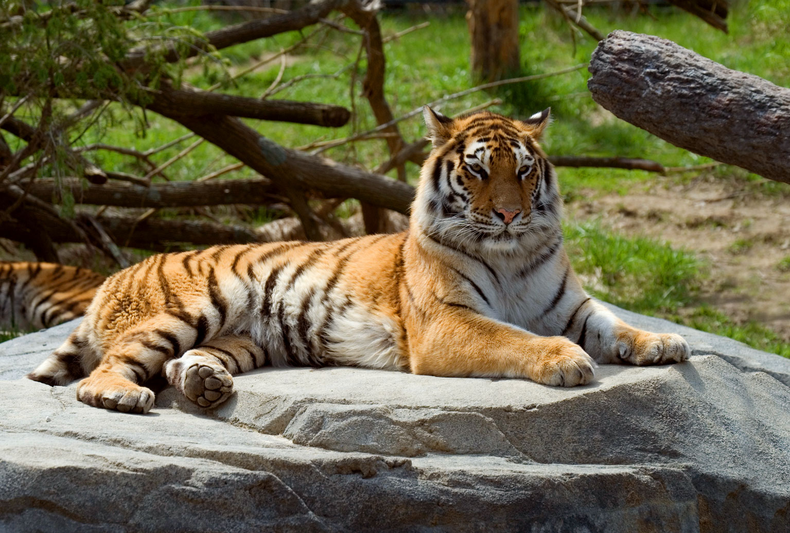
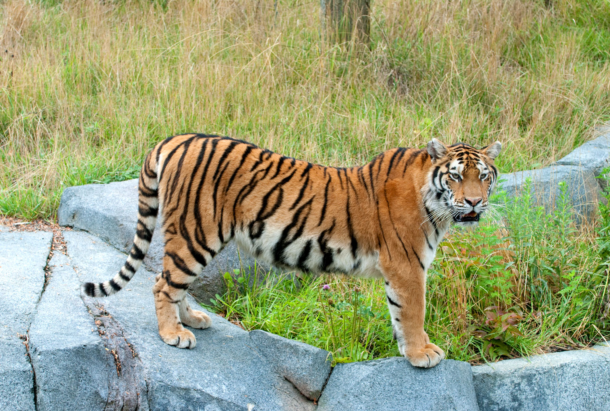
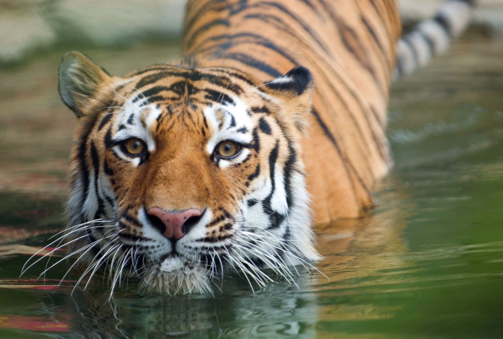
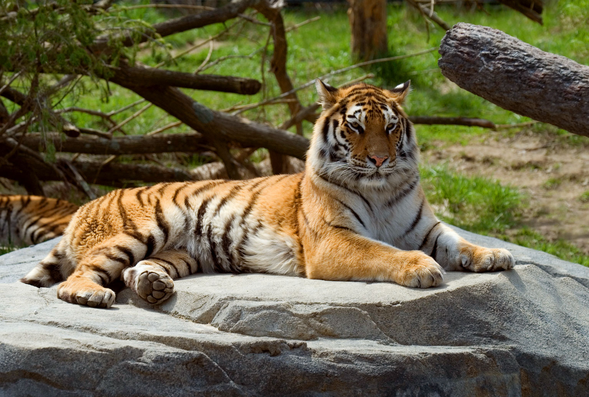
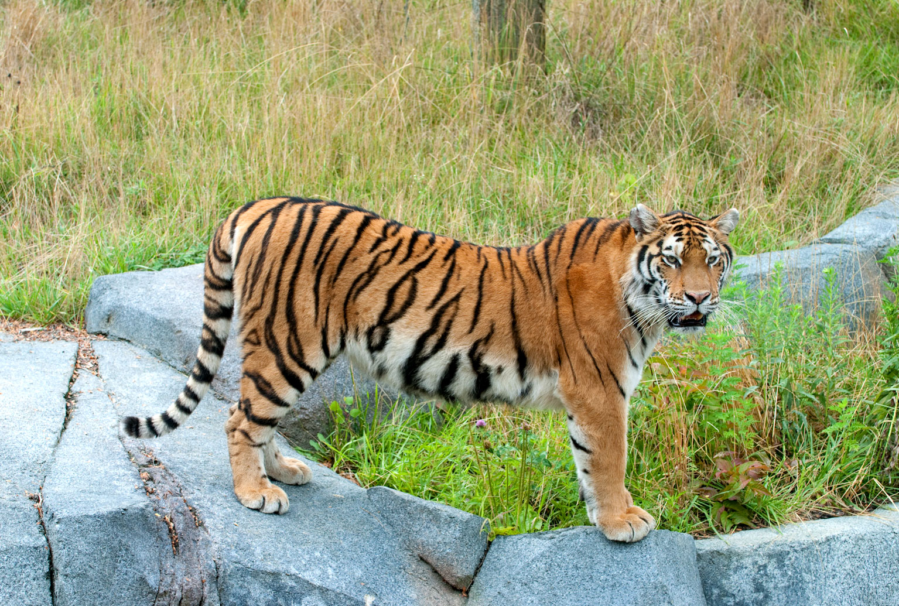

Tigers are majestic animals and my favorite exotic animal.

Tigers have always fascinated me, even as a young child. Their coloring and stripe patterns are unique.
They have deceivingly cute kitty faces,which make them appear cuddly. Tigers are on the endangered list,
and many kinds are already extinct. The WWF website has indicated that though Tigers are still endangered,
their numbers are upward. Thanks to zoos and conservation methods, Tiger numbers are on a stable or increasing
in India, Nepal, Bhutan, Russia, and China. Though Tigers are primarily solitary, they keep with their offspring,
and their territory largely depends on the availability of prey. Sadly, poaching and habitat loss are the
most significant reasons for species extinction. The Columbus Zoo's has a very nice habitat for the tigers and
offers learning sessions about them. I find myself very excited to see them every time I am at the zoo.
 





© 2022 Rhonda Rivas - CIS-212 Communicating in the Digital World.